1、SIFT概述
SIFT:Scale Invariant Feature Transfrom
尺度不变特征变换匹配算法
该算法是由David G.Lowe在1999年所发表，2004年完善总结,论文下载地址SIFT-Paper。
该算法是一种检测局部特征的算法，该算法通过求一幅图中的特征点（interest points,or corner points）及其有关scale 和 orientation 的描述子得到特征并进行图像特征点匹配。
其特点有：
- 1.SIFT特征是图像的局部特征，其对旋转、尺度缩放、亮度变化保持不变性，对视角变化、仿射变换、噪声也保持一定程度的稳定性；
- 2.独特性（Distinctiveness）好，信息量丰富，适用于在海量特征数据库中进行快速、准确的匹配；
- 3.多量性，即使少数的几个物体也可以产生大量的SIFT特征向量；
- 4.高速性，经优化的SIFT匹配算法甚至可以达到实时的要求；
- 5.可扩展性，可以很方便的与其他形式的特征向量进行联合。
SIFT算法的实质是在不同的尺度空间上查找关键点(特征点)，并计算出关键点的方向。
Lowe将SIFT算法分为四个步骤：
- 1.尺度空间极值检测(Scale-space extrema detection)：搜索所有尺度上的图像位置。通过高斯微分函数来识别潜在的对于尺度和旋转不变的兴趣点。
- 2.关键点定位(Keypoint localization)：在每个候选的位置上，通过一个拟合精细的模型来确定位置和尺度。关键点的选择依据于它们的稳定程度。
- 3.方向确定(Orientation assignment)：基于图像局部的梯度方向，分配给每个关键点位置一个或多个方向。所有后面的对图像数据的操作都相对于关键点的方向、
尺度和位置进行变换，从而提供对于这些变换的不变性。 - 4.关键点描述(Keypoint descriptor)：在每个关键点周围的邻域内，在选定的尺度上测量图像局部的梯度。这些梯度被变换成一种表示，这种表示允许比较大的局部形状的变形和光照变化。
2、SIFT算法相关——Gaussian Blur
SIFT算法是在不同的尺度空间上查找关键点，而尺度空间的获取需要使用高斯模糊来实现，Lindeberg等人已证明高斯卷积核是实现尺度变换的唯一变换核，并且是唯一的线性核。
2.1 二维高斯函数
高斯函数是一种图像滤波器，它使用正态分布（高斯函数）计算模糊模板，并使用该模板与原始图像做卷积运算，达到模糊图像的目的。
N维空间正态分布方程为：
$$G(x)=\frac 1 {\sqrt{2\pi\sigma^2}^N} e^{-\frac{r^2}{2\sigma^2}}$$
其中，\(\sigma\)是正态分布的标准差，\(\sigma\)越大，图像模糊的越厉害，r为模糊半径，模糊半径指的是模板元素到模板中心的距离。
对于一幅二维空间的图像，模板大小为m*n,则在该模板上的元素（x,y）对应的高斯计算公式2-1为：
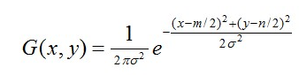
在二维空间中，这个公式生成的曲面的等高线是从中心开始呈正态分布的同心圆，如图2.1所示。分布不为零的像素组成的卷积矩阵与原始图像做变换。每个像素的值都是周围相邻像素值的加权平均。原始像素的值有最大的高斯分布值，所以有最大的权重，相邻像素随着距离原始像素越来越远，其权重也越来越小。这样进行模糊处理比其它的均衡模糊滤波器更高地保留了边缘效果。
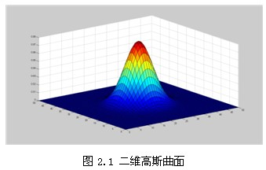
理论上来讲，图像中每点的分布都不为零，这也就是说每个像素的计算都需要包含整幅图像。在实际应用中，在计算高斯函数的离散近似时，在大概3σ距离之外的像素都可以看作不起作用，这些像素的计算也就可以忽略。通常，图像处理程序只需要计算\(({6\sigma+1})({6\sigma+1})\)的矩阵就可以保证相关像素影响。
2.2 图像高斯滤波——高斯模糊
根据\(\sigma\)的值，计算高斯模板矩阵的大小\(({6\sigma+1})({6\sigma+1})\)，使用公式计算高斯模板矩阵的值。\(5\ast5\)的高斯模板如下：
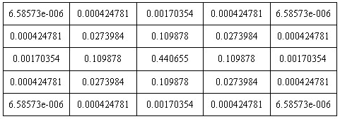
下图是5*5的高斯模板卷积计算示意图。高斯模板是中心对称的。
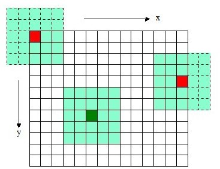
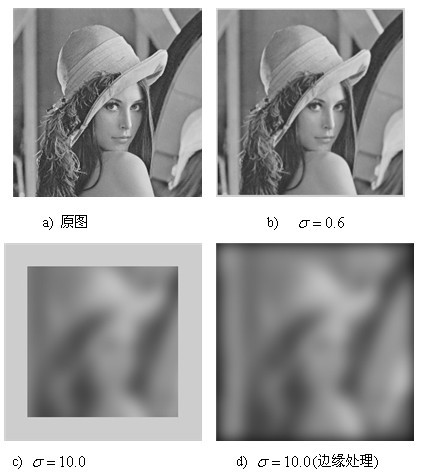
高斯模糊也可以在二维图像上对两个独立的一维空间分别进行计算，这叫作线性可分。也就是说，使用二维矩阵变换得到的效果也可以通过在水平方向进行一维高斯矩阵变换加上竖直方向的一维高斯矩阵变换得到。从计算的角度来看，这是一项有用的特性，因为这样只需要 \(O(n\times M\times N)+O(m\times M\times N)\) 次计算，而不可分的矩阵则需要 \(O(m\times n\times M\times N)\) 次计算，其中 M,N 是需要进行滤波的图像的维数，m、n 是滤波器的维数。
高斯分离卷积可以消除二维高斯所产生的边缘，如下图，对用模板矩阵超出边界的部分——虚线框，将不作卷积）。
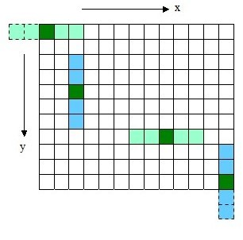
3、尺度空间极值检测
尺度空间使用高斯金字塔表示。Tony Lindeberg指出尺度规范化的LoG(Laplacion of Gaussian)算子具有真正的尺度不变性，Lowe使用高斯差分金字塔近似LoG算子，在尺度空间检测稳定的关键点
3.1 尺度空间建立
尺度空间理论
在图像信息处理模型中引入一个被视为尺度的参数，通过 连续变化尺度 参数获得多尺度下的尺度空间表示序列，对于这些序列进行尺度空间主轮廓的提取，并以该主轮廓作为一种特征向量，
实现边缘、角点检测和不同分辨率上的特征提取等。
对于通过构建高斯金字塔来表示尺度空间，我觉得可以理解为通过变化高斯模糊的模板大小，即改变\(\sigma\)的值来构建。对于连续的变化尺度，在后面会讲到。
尺度空间的表示
一个图像的尺度空间，\(L(x,y,\sigma)\)定义一个变化尺度的高斯函数\(G(x,y,\sigma)\)与原图\(I(x,y)\)的卷积。
$$L(x,y,\sigma)=G(x,y,\sigma) \ast I(x,y)$$
其中\(G(x,y,\sigma)\)为高斯函数，如公式2-1，m,n表示高斯模板的纬度，（x,y）代表图像的像素位置，\(\sigma\)是 尺度空间因子，值越小表示图像呗平滑的越少，相应的尺度就越小，大尺度对应图像的概貌特征，小尺度对应图像的细节特征。
高斯金字塔的构建
上述说到图像的尺度空间使用构建图像金字塔来表示，高斯金字塔的构建主要分为两部分：
（1）对图像做不同尺度的高斯模糊，即改变\(\sigma\)的值；——同组不同层之间
（2）对图像做降采样（隔点采样）。——不同组之间（需要等前一组完成之后才能执行）
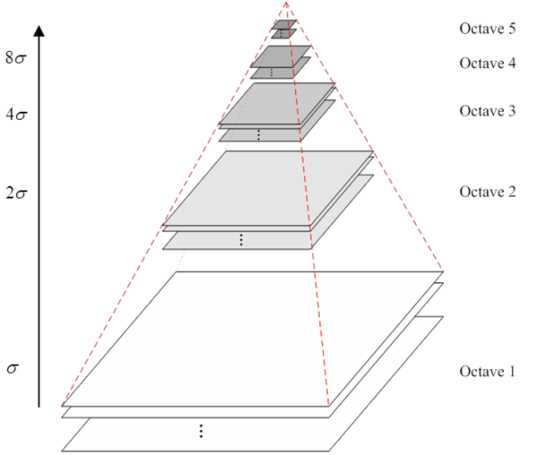
高斯金字塔主要有组（Ocatve）和层（Level）之分，每组里有若干层。
高斯金字塔模型的构建就是将原始图像不断降阶采样，即后一个octave为上一个octave降采样结果（图像长宽分别减半），得到一系列大小不一的图像，由大到小，从下到上构成的塔状模型，原始图像作为金字塔的第一层，每次降采样所得到的图像为金字塔的一组（每组有很多层图像），每个金字塔共有n组，金字塔的组数是根据图像的原始大小和塔顶图像大小共同决定的，其计算公式：
$$n=\log_2{min(M,N)}-t,t\in [0,\log_2{min(M,N)})$$
其中M，N为原始图像的大小，t为金字塔塔顶的图像最小维数的对数值。如：对于大小为512*512的图像，其塔顶图像的大小为4*4时，n=7。
另外，在降采样时，高斯金字塔上一组图像的初始图像是有前一组图像中倒数第3张图像隔点降采样得到的。
3.2 高斯差分金字塔
在前面提到，SIFT的第一步就是极值检测，若使用LOG对图像检测兴趣点需要很大的计算量，在1994年Lindeberg发现了高斯差分函数（Difference of Gaussian,简称DOG算子），与尺度归一化的高斯拉普拉斯函数\(\sigma^2 \nabla^2G\)非常近似，高斯函数\(G(x,y,\sigma)\)和\(\sigma^2 \nabla^2G\)的关系推到如下：
$$\frac {\partial G}{\partial\sigma}=\sigma \nabla^2G$$
利用差分近似微分，则有：
$$\sigma \nabla^2G=\frac {\partial G}{\partial\sigma}\approx\frac{G(x,y,k\sigma)-G(x,y,\sigma)}{k\sigma-\sigma}$$
因此：
$$ G(x,y,k\sigma)-G(x,y,\sigma)\approx (k-1)\sigma^2\nabla^2G$$
所以Low使用更高效的高斯差分算子代替拉普拉斯算子进行极值检测，如下：
$$D(x,y,\sigma)=(G(x,y,k\sigma)-G(x,y,\sigma))*I(x,y)=L(x,y,k\sigma)-L(x,y,\sigma)$$
由公式可以看出，使用高斯金字塔每组中相邻上下两层的图像相减，如图3-2所示，就可以构建高斯差分金字塔，再进行极值点检测。
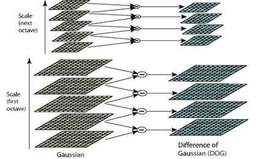
从上图中可以分析“尺度变化的连续”，\(\sigma\)——尺度空间因子，O——高斯金字塔的组数，S——每组中的图像层数，这三个是构建尺度空间所需的参数，它们之间的关系如下：
$$\sigma(o,s)=\sigma_02^{(o+\frac s{S})},o\in [0,…,O-1],s\in[0,…,S+2]$$
其中\(\sigma_0\)是基准层的尺度，o为组octave的索引，s为组内层的索引，Lowe取\(\sigma=1.6，S=3\)。
并且同组不同层之间的尺度空间满足下式：
$$\sigma(s)={\sqrt{(k^s\sigma_0)^2-(k^{s-1}\sigma_0)^2}}$$
在最开始建立高斯金字塔时，要预先模糊输入图像来作为第0组的第0层的图像，这时相当于丢弃了最高的空域采样率，所以通常都会将原始图像的大小放大一倍，作为第-1组。
由公式\(D(x,y,\sigma)=(G(x,y,k\sigma)-G(x,y,\sigma))*I(x,y)=L(x,y,k\sigma)-L(x,y,\sigma)\)可知，第一组中的第一层尺度空间因子为\(\sigma\)，第2层为\(k\sigma\)因为要保持尺度空间的连续性，所以高斯金字塔中的尺度空间因子取值为：
$$2^{i-1}{(\sigma,k\sigma,k^2\sigma,…,k^{n-1}\sigma)},k=2^{\frac1{S}}$$
其中i表示组octave的层数（第几层）。
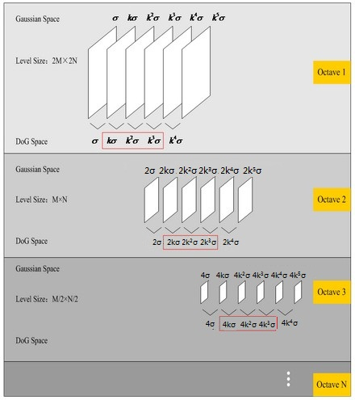
在这里假设s=3,也就是表示一组中有3层图像，则\(k=2^{\frac1{s}}=2^{\frac1{3}}\)，由图3-3可以直观的看出高斯金字塔转为高斯差分金字塔的过程，从图中可知当s=3时，Gauss Space和DOG Space 分别有3个（s个）和2个（s-1个）分量，在DOG Space中，第一组（1st-octave）两项分别是\(\sigma\)，\(k\sigma\);第二组（2nd-octave）两项分别是\(2\sigma\)，\(2k\sigma\);这样会导致第一组最后一张和第二组第一张之间无法进行极值检测（差分），所以必须在高斯空间继续添加高斯模糊项，使得形成
\(\sigma\)，\(k\sigma\),\(k^2 \sigma\),\(k^3 \sigma\),\(k^4 \sigma\)这样就可以选择DOG中的中间三项
\(k\sigma\),\(k^2 \sigma\),\(k^3 \sigma\)，那么下一组中所得的三项即为\(2k\sigma\),\(2k^2 \sigma\),\(2k^3 \sigma\),其首项\(2k\sigma=2^{\frac4{3}}\)。刚好和上一组的末项\(k^3 \sigma\)尺度变化保持连续，所以每次要在Gaussian Space添加3项，
每组共有s+3层，相应的DOG金字塔有s+2层的图像。
3.3 空间极值点检测（检测DOG尺度空间的极值点）
为了寻找DOG的尺度空间的极值点，每一个像素点要和它所有相邻点比较，看其是否比它的图像域和尺度域的相邻点大或者小，在DOG金字塔中，一个图像像素点相邻的点分为同一层和相邻层上的点，
如图3-4所示，中间的检测点和它同尺度的8个相邻点和上下相邻尺度对应的9*2个点共有26个点进行比较。所以这也说明为什么需要尺度连续变化。
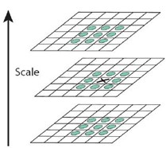
4、关键点定位——除去不好的特征点
上述步骤检测到的极值点并不是都是真正的极值点，包含了离散空间的极值点，需要通过拟合三维二次函数来精确确定关键的位置和尺度，同时去除低对比度的关键点和不稳定的边缘点。
（1）利用Talyor展开式，并对其求导，得到精确的位置；
（2）在已经检测到的特征点钟，要去除低对比度的特征点，将取的精确的位置反代入Talyor展开式中，只取前2项；
（3）要去除不稳定的边缘响应点，一个定义不好的高斯差分算子的极值在横跨边缘的地方有较大的主曲率，而在垂直边缘的方向有较小的主曲率。
主曲率通过一个2×2的Hessian矩阵H求出：
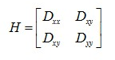
H的特征值设定为\(\alpha\)和\(\beta\)分别代表x和y方向的梯度，D的主曲率和H的特征值成正比。
$$Tr(H)=D_{xx}+D_{yy}=\alpha+\beta$$
$$Det(H)=D_{xx}D_{yy}-{(D_{xy})}^2=\alpha\beta$$
令\(\alpha=\gamma\beta\),则
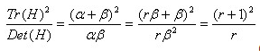
(r+1)^2/r的值在两个特征值相等的时候最小，随着r的增大而增大，因此，
为了检测主曲率是否在某个域值\(\gamma\)下（Lowe文章中，取\(\gamma=10\)，只需检测
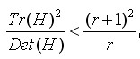
5、为关键点分配一个128维的方向
前面描述的算法已经确定了每幅图像的特征点，为每个特征点计算一个方向，依照这个方向做进一步的计算，利用关键点邻域像素的梯度方向分布特性为每个关键点指定方向参数，使算子具备旋转不变性。
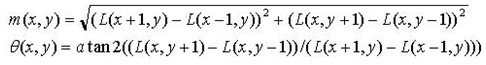
为(x,y)处梯度的模值和方向公式。其中L所用的尺度为每个关键点各自所在的尺度，按Low的建议，梯度模值m(x,y)按\(\sigma=1.5\sigma\)_oct的高斯分布加成，按照尺度采样的\(3\sigma\)原则，领域窗口半径为\(3*1.5\sigma\)_oct。其中\(\sigma\) _oct(s)=\(\sigma_02^{\frac{s}{S}},s\in[0,…,S+2]\),表示某一组中第s层的尺度空间值。
在完成关键点的梯度计算后，使用直方图统计邻域内像素的梯度和方向，梯度直方图将0~360度的方向范围分为36个柱(bins)，其中每柱10度。Lowe论文中还提到要使用高斯函数对直方图进行平滑，减少突变的影响
如图5-1所示，直方图的峰值则代表了该关键点处邻域梯度的主方向，即作为该关键点的方向。
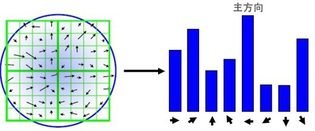
方向直方图的峰值则代表了该特征点处邻域梯度的方向，以直方图中最大值作为该关键点的主方向。为了增强匹配的鲁棒性，只保留峰值大于主方向峰值80％的方向作为该关键点的辅方向。因此，对于同一梯度值的多个峰值的关键点位置，在相同位置和尺度将会有多个关键点被创建但方向不同。仅有15％的关键点被赋予多个方向，但可以明显的提高关键点匹配的稳定性。实际编程实现中，就是把该关键点复制成多份关键点，并将方向值分别赋给这些复制后的关键点，并且，离散的梯度方向直方图要进行插值拟合处理，来求得更精确的方向角度值。
至此，图像的关键点已经检测完毕，每个关键点有三个信息：位置，所处尺度、方向，由此可以确定一个SIFT特征区域。
5.1 生成关键特征点描述子
对于每一个关键点，都有三个信息：位置、尺度和方向，接下来就是利用这个三个信息，为每个特征点生成一个描述子。SIFT描述子是关键点领域高斯图像梯度统计结果的一种表示，通过对关键点周围图像区域分块，计算块内梯度直方图，生成具有独特性的向量，这个向量是该区域图像信息的一种抽象，具有唯一性。
在Lowe文中建议描述子使用的关键点尺度空间是4*4的窗口，在该窗口中计算8个方向（就是将360度划分为45度一个方向）的梯度信息，共有4*4*8=128维向量表征。
（1）特征描述子与特征点所在的尺度有关，因此，对梯度的求取应在特征点对应的高斯图像上进行。将关键点附近的邻域划分为d*d(Lowe建议d=4)个子区域，每个子区域作为一个种子点，每个种子点有8个方向。
把上图划分为如图5-3右图所示的4*4大小的子区域，再在子区域中计算8方向的直方图。
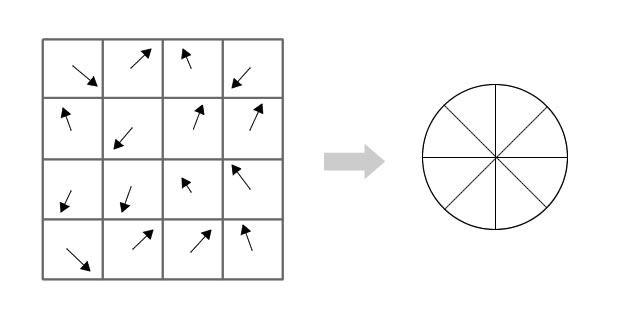
图5-3左部分的中央为当前关键点的位置，每个小格代表关键点邻域所在尺度空间的一个像素，利用公式求得每个像素的梯度幅值与梯度方向，箭头方向代表该像素的梯度方向，箭头长度代表梯度模值，然后用高斯窗口对其进行加权运算。图中蓝色的圈代表高斯加权的范围（越靠近关键点的像素梯度方向信息贡献越大）。然后在每4×4的小块上计算8个方向的梯度方向直方图，绘制每个梯度方向的累加值，即可形成一个种子点，如图右部分示。此图中一个关键点由2×2共4个种子点组成，每个种子点有8个方向向量信息。这种邻域方向性信息联合的思想增强了算法抗噪声的能力，同时对于含有定位误差的特征匹配也提供了较好的容错性。通过上述的过程就这样就可以对每个feature形成一个448=128维的描述子，每一维都可以表示4*4个格子中一个的scale/orientation。将这个向量归一化之后，就进一步去除了光照的影响。至此，SIFT特征描述向量生成。
6、SIFT之间的Match过程
比如有2幅图A和B，并生成了两幅图的描述子（分别是k1128维和k2128维），就将两图中各个scale（所有scale）的描述子进行匹配，匹配上128维即可表示两个特征点match上了。
当两幅图像的SIFT特征向量生成后，我们采用关键点特征向量的欧式距离来作为两幅图像中关键点的相似性判定度量。取图像A中的某个关键点，
并找出其与图像B中欧式距离最近的前两个关键点，在这两个关键点中，如果最近的距离除以次近的距离少于某个比例阈值，则接受这一对匹配点。降低这个比例阈值，SIFT匹配点数目会减少，但更加稳定。为了排除因为图像遮挡和背景混乱而产生的无匹配关系的关键点,Lowe提出了比较最近邻距离与次近邻距离的方法，距离比率ratio小于某个阈值的认为是正确匹配。因为对于错误匹配,由于特征空间的高维性,相似的距离可能有大量其他的错误匹配,从而它的ratio值比较高。Lowe推荐ratio的阈值为0.8。但作者对大量任意存在尺度、旋转和亮度变化的两幅图片进行匹配，结果表明ratio取值在0.4~0.6之间最佳，小于0.4的很少有匹配点，大于0.6的则存在大量错误匹配点。
Lowe建议ratio的取值原则如下:
ratio=0.4 对于准确度要求高的匹配；
ratio=0.6 对于匹配点数目要求比较多的匹配；
ratio=0.5 一般情况下。
也可按如下原则:当最近邻距离<200时ratio=0.6，反之ratio=0.4，ratio的取值策略能排分错误匹配点。
示例图如下：
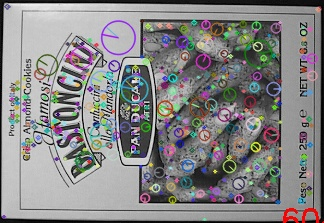
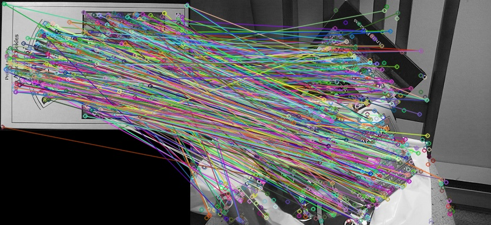